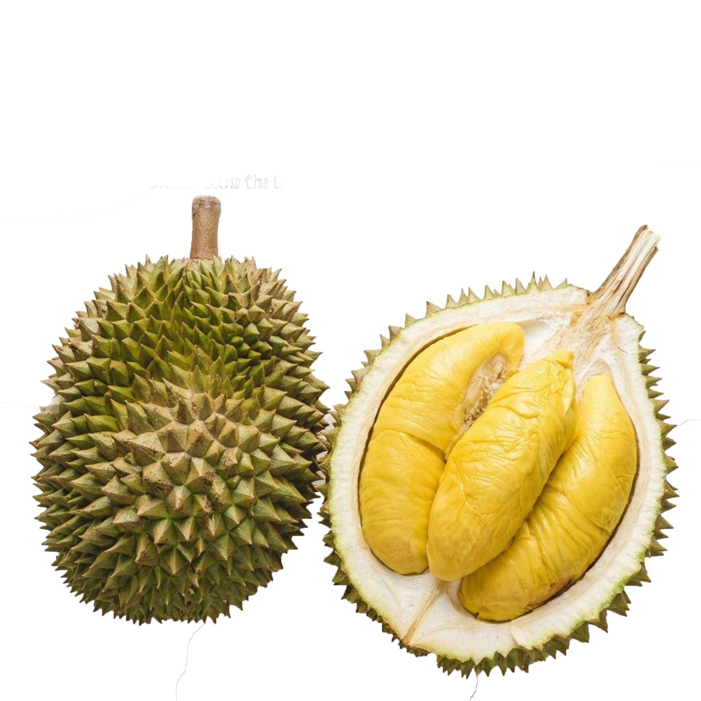
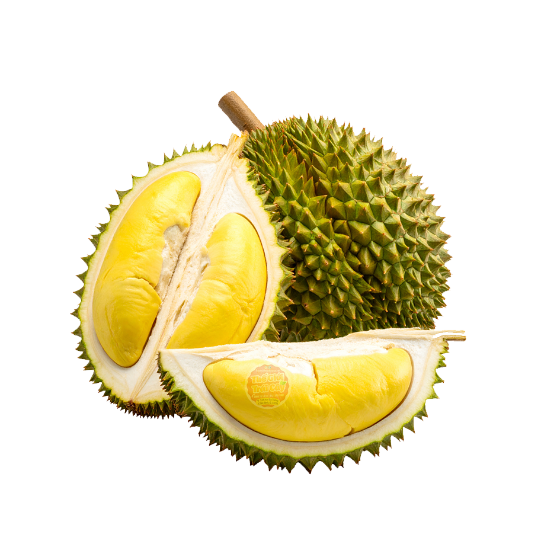
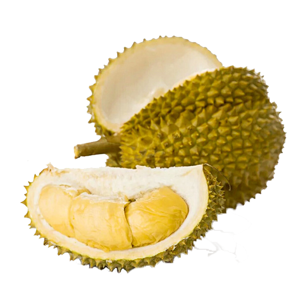

Khu vực Cư M'gar, Đắk Lắk. Vùng đất đỏ bazan, phù hợp giới thiệu cho dòng sầu riêng cao cấp, cơm vàng và béo đậm.

Sầu riêng musang king
Được mệnh danh là tuyệt phẩm vua của các loại sầu riêng, sầu riêng Musang King mang đến những múi sầu vàng rực, dẻo mịn và béo ngậy tan ngay trong miệng. Khám phá ngay hương vị thượng hạng làm say lòng cả những thực khách khó tính nhất
Khu vực Krông Năng, Đắk Lắk. Vườn phù hợp với giống Ri6 nhờ khí hậu khô ráo, cho cơm dày, vị ngọt và mùi thơm rõ.
Sầu Riêng Ri6
Được mệnh danh là niềm tự hào của trái cây miền Tây, sầu riêng Ri6 chinh phục thực khách bởi phần thịt siêu dày, vàng rực, dẻo mịn và ngọt lịm tim. Thưởng thức ngay để cảm nhận hương vị đỉnh cao, ăn một lần là nhớ mãi trọn đời!

Khu vực Krông Pắc, Đắk Lắk. Đây là vùng trồng phổ biến, hợp với giống Dona cho múi ráo, màu đẹp và dễ bảo quản.

Sầu riêng Dona
Hương vị ngọt thanh tinh tế đan xen cùng độ béo ngậy đặc trưng... Được ươm mầm và phát triển mạnh mẽ trên nền đất đỏ bazan Tây Nguyên, sầu riêng Dona Đắk Lắk mang một hương vị đậm đà, mùi thơm nồng nàn hơn hẳn, xứng đáng là món quà quý giá từ đại ngàn.